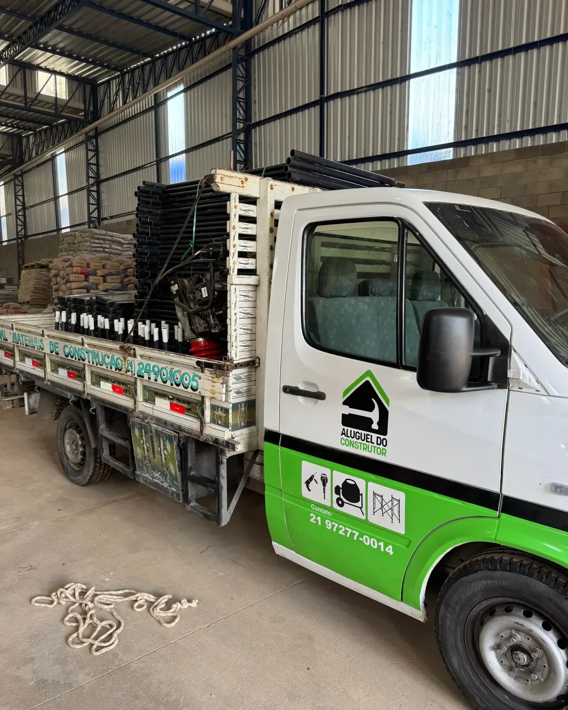
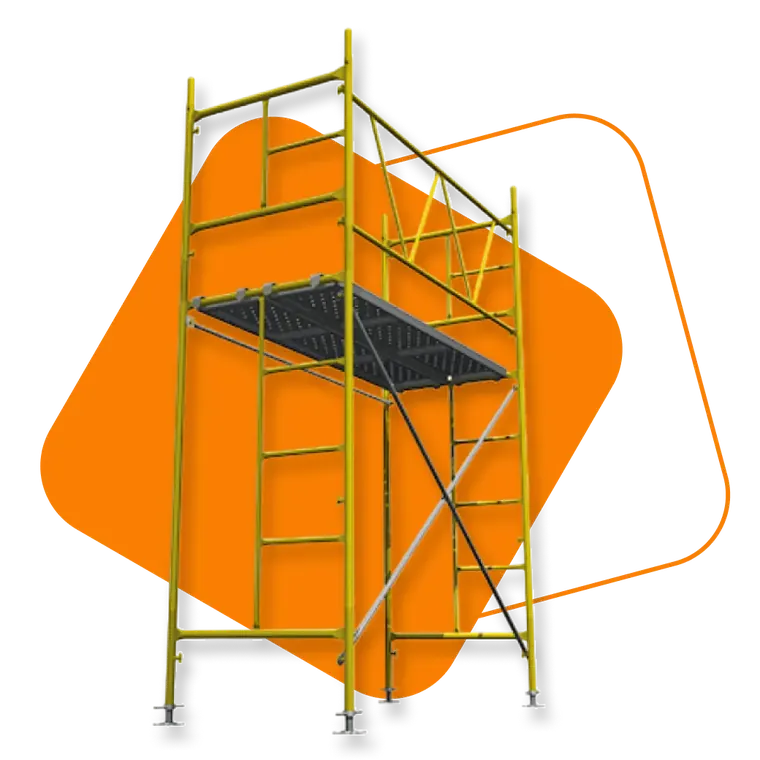
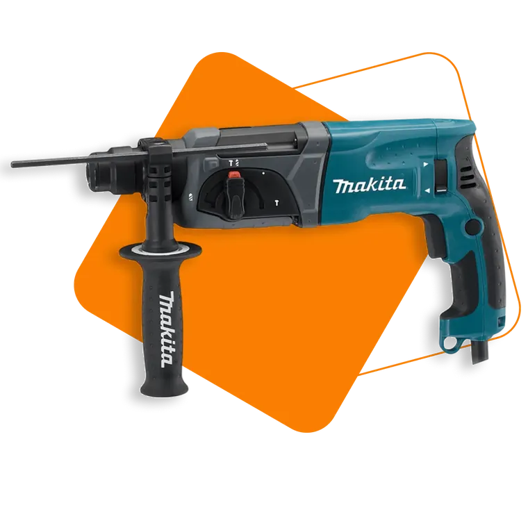
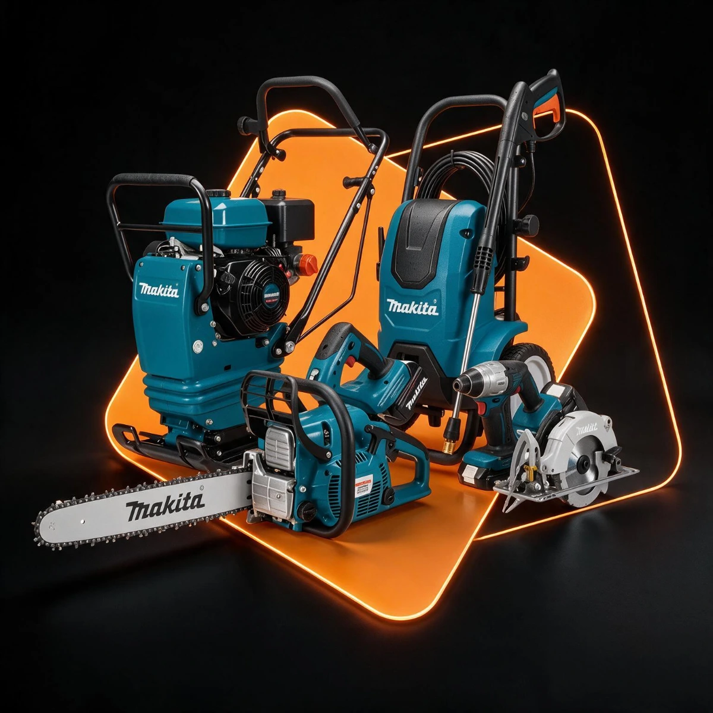
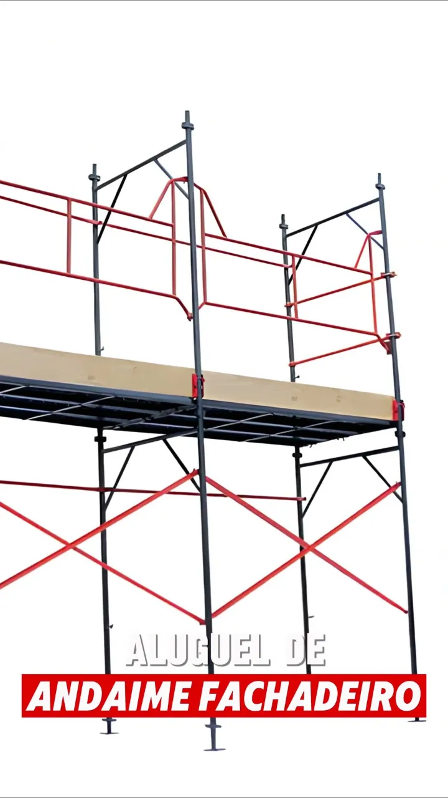
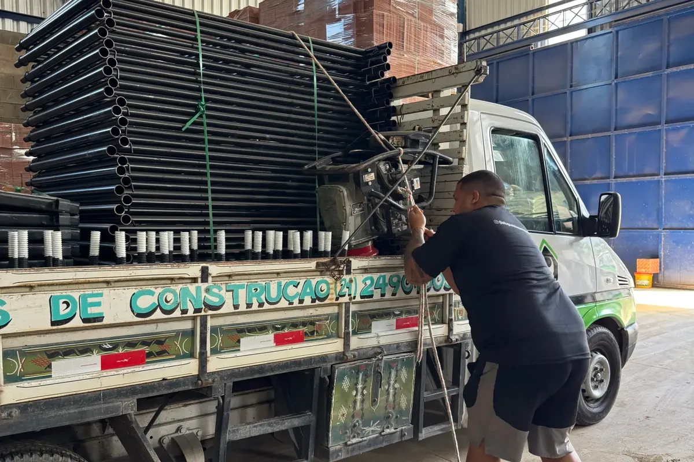

Manda a lista
Diga o que precisa, o endereço da obra e por quanto tempo. Foto ou áudio serve.
Andaimes, betoneiras, marteletes e mais 12 categorias, com peça conferida uma a uma, entrega no canteiro e orçamento respondido no WhatsApp. Cinco unidades no Rio de Janeiro, do Recreio a Botafogo.

Os mais alugados
Andaime, betoneira e martelete respondem por boa parte dos pedidos que chegam aqui. São também os itens em que a diferença entre equipamento bem cuidado e equipamento cansado aparece logo no primeiro dia.

Fachadeiro e tubular para trabalho em altura, com montagem simples e pronta entrega.
Ver detalhes e alugar
Mistura homogênea de concreto e argamassa direto no canteiro, sem depender de usina.
Ver detalhes e alugar
Perfuração e demolição em concreto com potência de verdade e menos vibração na mão.
Ver detalhes e alugar
Linha completa
São 15 categorias que cobrem a obra do começo ao fim. Você aluga tudo no mesmo lugar, com uma entrega só e um contato só, em vez de coordenar quatro fornecedores diferentes.
Como funciona
Diga o que precisa, o endereço da obra e por quanto tempo. Foto ou áudio serve.
Respondemos com disponibilidade, valor e prazo. Sem cadastro e sem formulário longo.
Você escolhe a data e a janela de entrega que funcionam para o canteiro.
A gente entrega, acompanha durante o período e retira quando o serviço acabar.
Em vídeo
Antes de alugar, veja o equipamento. Painel, travessa, diagonal e piso montados, do jeito que chega no seu canteiro.

Por que a gente
Locação de equipamento parece commodity até o dia em que chega peça faltando, motor cansado ou entrega no horário errado. A diferença está no operacional, não no catálogo.
Cada item passa por inspeção, limpeza e manutenção antes de sair. Peça com folga, solda aberta ou motor cansado não vai para a obra.
Não dependemos de transportadora. A entrega e a retirada são nossas, o que encurta prazo e evita o equipamento parado esperando carona.
Você fala com gente que entende o que é uma laje escorada e o que é uma fachada para pintar. Isso muda a qualidade da recomendação.
Duas no Recreio dos Bandeirantes, uma em Vargem Grande, uma em Pedra de Guaratiba e uma em Botafogo. Sempre tem uma base perto da sua obra.
Você recebe o valor, o período e as condições no orçamento. Sem taxa que aparece só na devolução.
Mandou a lista, a gente responde com disponibilidade e valor. Sem formulário longo, sem cadastro obrigatório e sem espera de dias.

Segurança
Cada item passa por inspeção, limpeza e manutenção preventiva antes de sair do galpão. Andaime tem solda, encaixe e piso conferidos. Betoneira tem motor, correia e coroa checados. Ferramenta elétrica tem cabo, escova e proteção testados.
Trabalhamos dentro do que as normas de segurança exigem, entre elas a NR-12, de máquinas e equipamentos, e a NR-18, de condições no canteiro. A responsabilidade técnica pela montagem e pelo uso continua sendo do responsável pela obra, e a gente ajuda com orientação sempre que precisar.
Onde estamos
Cada unidade atende a sua região com o mesmo catálogo. Quanto mais perto a base, mais curto o prazo de entrega e mais fácil resolver imprevisto no meio da obra.
Quem já alugou
Avaliações públicas deixadas por clientes no Google.
“A loja sempre tem tudo que preciso e conta com ótimo atendimento.”
“Atendimento ótimo, preços muito bons. Possuem estacionamento.”
“Grande variedade, bom preço, recomendo.”
“Muito bom no preço, na qualidade e no atendimento dedicado e carinhoso pelos funcionários, parabéns! Compro sempre lá e indico.”
“Excelente loja e atendimento! Precisava de uma lista de materiais e, leiga que sou, confesso que fiquei um pouco intimidada. No entanto, recebi um tratamento super paciente e cuidadoso.”
Pagamento
Escolha a forma que se encaixa na realidade da sua empresa ou do seu projeto. Para construtora e empreiteira, o boleto com prazo combinado é o formato mais usado.
Para lojistas
Se você já tem uma loja de material de construção, a locação de equipamentos é a receita que falta: usa o mesmo público, o mesmo espaço e traz o cliente de volta várias vezes por obra.
Tira-dúvidas
Não achou a sua? Veja a lista completa ou pergunte no WhatsApp.
Trabalhamos com 15 categorias: andaimes, betoneiras, marteletes, compactadores, cortadores de piso, escoras, escadas, furadeiras e parafusadeiras, lixadeiras e esmerilhadeiras, serras e plainas, lavadoras de alta pressão, lavadoras de estofado, motosserras e roçadeiras, sopradores e aspiradores e bombas sapo. Os mais procurados são andaime, betoneira e martelete.
O período é flexível: diária, semanal, quinzenal ou mensal. Obra de fachada e escoramento costumam fechar por mês; serviço pontual de furo ou corte resolve na diária. Se a obra atrasar, avise antes do fim do período que renovamos.
Sim. Cada item passa por inspeção, limpeza e manutenção preventiva antes de sair para a obra, seguindo as normas de segurança aplicáveis, entre elas a NR-12, para máquinas e equipamentos, e a NR-18, para o canteiro.
Entregamos e retiramos com frota própria nas regiões atendidas por cada unidade. Informe o endereço da obra no orçamento que confirmamos prazo e condição de entrega.
PIX, cartão de crédito, cartão de débito, boleto bancário e transferência. Para construtora e empresa, o boleto com prazo combinado costuma ser o formato mais prático.
Pelo WhatsApp, que é o caminho mais rápido: mande a lista do que precisa, o endereço da obra e o período. Também dá para usar o formulário do site, que monta a mensagem para você.
Para começar o orçamento, não. Basta chamar no WhatsApp. A documentação necessária para a locação é combinada no momento do fechamento e varia conforme o equipamento e o período.
Orçamento em minutos
Mande a lista do que você precisa pelo WhatsApp. Respondemos com disponibilidade, prazo e valor, sem burocracia e sem cadastro.